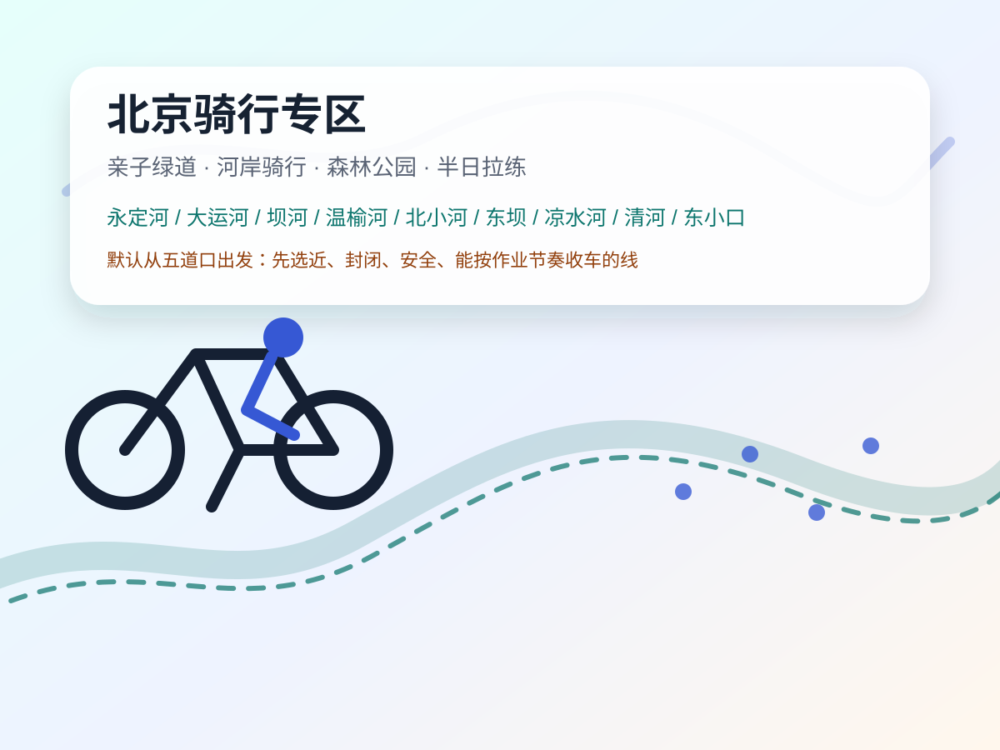

北京骑行专区｜亲子绿道总览
五道口出发 · 亲子绿道 / 河岸骑行 / 森林公园 / 京郊湖边线。把用户补充的“13 条五星绿道 + 16 条神仙亲子骑行道”合并去重，按安全性、距离、共享单车、风景和周末作业节奏做成可选清单。
北京全域骑行
亲子优先
骑行专区
默认五道口出发


怎么快速选
| 场景 | 优先选 |
|---|---|
| 这周作业多，只能上午骑 | 三山五园北坞/玉东段、清河缓行系统、小清河、北小河、东坝公园段；控制 8–15km。 |
| 想安全封闭、少车 | 永定绿道、东坝公园段、凉水河亦庄段、大运河森林公园、温榆河绿道、运潮减河。 |
| 想风景强、值得拍照 | 三山五园、雁栖湖、金海湖碧波岛、妫河森林公园、百里山水画廊、阪泉体育公园。 |
| 想共享单车解决 | 市区线 + 大运河森林公园、温榆河、东坝/将府/北小河/清河等；京郊湖区需临出发复核。 |
| 想把骑行变成一日游 | 雁栖湖、金海湖、百里山水画廊、妫河森林公园、阪泉体育公园、房山新城滨水森林公园。 |
本周毛豆优先级
这个周末英语作业多、还要改 5.3 错题和练国际象棋，所以骑行不宜选“远郊一日线”。本周只建议选近场 8–15km，骑完 11:30 前回到学习节奏。
- 首选：三山五园北坞/玉东/两山段，8–12km，离五道口近，风景好。
- 备选：清河缓行系统 / 小清河，车程短，但注意电动车和河岸边界。
- 再备选：东坝公园段 / 北小河段，绿道条件好，适合半日。
- 暂不建议本周：雁栖湖、金海湖、百里山水画廊、妫河、阪泉——都更适合没大作业的一日游。
五星近场 / 城市绿道清单
| 序号 | 路线 | 适合骑法 | 亮点 | 风险 / 临出发复核 |
|---|---|---|---|---|
| 1 | 三山五园绿道北坞/玉东段 已有 36km 旗舰页 | 8–12km 亲子精华；体力好可接 36km 全线 | 北坞稻田、玉泉山借景、皇家园林文化底色；共享单车可行线索强。 | 公园内部骑行政策可能变；周末人多要低速，必要时推行。 |
| 2 | 永定绿道 / 绿堤公园串联 | 往返十几公里；封闭绿道亲子友好 | 永定河景色、绿堤公园一系列公园串联，适合“安全放电”。 | 共享单车较少，最好自带车；停车点和入口临出发用地图确认。 |
| 3 | 通州大运河绿道 / 大运河森林公园 | 10–20km 新手家庭线；可加绿心公园/新三馆 | 河面开阔、路面宽、距离长；适合零差评亲子骑行。 | 节假日热门点人多；大运河森林公园和城市绿心之间接驳需看当天体力。 |
| 4 | 朝阳绿道·坝河段 | 长距离河岸线；可接温榆河 | 景色连续、城市感和河岸感兼具，适合训练耐力。 | 线很长，入口/出口容易选错；提前定一个 10–15km 回撤点。 |
| 5 | 温榆河绿道 | 30km+ 超长绿道；可截取 10–18km | 路线较封闭，路况好，景色风格变化多。 | 垃圾桶和厕所不好找；带足水，先标厕所/停车。 |
| 6 | 朝阳绿道·北小河段 | 往返约 15km，适合半日 | 绿道条件好，北小河水面漂亮，城市内治愈线。 | 部分路段紧靠河边，孩子必须控速，不能并排打闹。 |
| 7 | 朝阳绿道·东坝公园段 | 十几公里成熟亲子段 | 路况好、景色不错、设施完备，路线相对封闭安全。 | 周末公园人流和儿童车多；适合骑行，不适合竞速。 |
| 8 | 凉水河绿道·亦庄新城森林公园段 | 树荫线；亲水绿道半日 | 路线封闭，树荫多，凉水河景色不错；夏天友好。 | 浅滩亲水区要防滑；远离五道口，出发要早。 |
| 9 | 乐活中堤 | 约 20km，安静放空线 | 路线封闭、人少安静、氛围松弛。 | 路面不太平、共享单车少、很晒；不适合炎热正午。 |
| 10 | 清河缓行系统 | 单线十几公里；北部近场训练 | 绿道本身条件很好，离五道口相对近。 | 电动车多，亲子骑行要选低峰时段并靠边。 |
| 11 | 朝阳绿道·将府公园—黑桥公园段 | 十几公里；文艺拍照线 | 坝河景色、二月兰、铁轨遗迹、将府公园/黑桥公园硬件成熟。 | 路网密集容易跑偏；提前定好“将府—黑桥”主线。 |
| 12 | 42 公里骑行绿道·东小口森林公园段 | 截取东小口精华段 | 森林感强、安静封闭、出片好；市区共享单车可骑。 | 停车略难；42km 全线条件参差，不建议亲子一次刷全。 |
| 13 | 小清河绿道 | 河堤路轻骑；适合近场半日 | 露营、跑步、走路都好，适合轻松家庭活动。 | 骑行道在小清河东岸河堤路，西岸不让骑；注意河岸安全。 |
京郊 / 一日游神仙骑行道
| 序号 | 路线 | 骑法 | 为什么值得去 | 备注 |
|---|---|---|---|---|
| 14 | 雁栖湖骑行道 已有详情页 | 环湖 15–18km；可现场租车 | 湖景稳定，像油画；共享单车/山地车租赁线索友好。 | 适合没大作业的一日线，周末要早到。 |
| 15 | 阪泉体育公园绿道 | 约 10km 环线 | 金黄稻田、森林栈道、草甸旷野，秋天尤其强。 | 离市区远；儿童/成人山地车可租线索，临出发复核。 |
| 16 | 金海湖 / 碧波岛骑行 已有金海湖详情页 | 金海湖 15–20km；碧波岛景区内休闲骑 | 欧式城堡、草坪湖泊、大水面，度假感强。 | 碧波岛门票贵；景区内骑行政策和租车点需复核。 |
| 17 | 百里山水画廊 | 京郊山水公路骑；分段而非亲子刷长线 | 北京最像山水画的骑行环境，适合大孩子/大人挑战。 | 远、路长、有公路段；亲子需短段体验，不建议小孩长距离公路混行。 |
| 18 | 妫河森林公园骑行道 | 森林公园内租车/骑行 | 像骑进宫崎骏的夏天；儿童、成人山地车可租线索。 | 延庆一日线；夏天防晒补水，秋天更舒服。 |
| 19 | 顺义新城滨河森林公园 / 潮白河畔 | 森系氧吧半日到一日 | 潮白河畔森林感强，适合轻松遛娃。 | 入口、停车和共享单车边界需地图复核。 |
| 20 | 东郊森林公园·华北树木园 | 森林花海轻骑 | 像在森林花海里骑车，适合春秋。 | 公园内骑行政策可能分区变化，现场看标识。 |
| 21 | 亦庄新城滨河森林公园 / 凉水河畔 | 亲水绿道 + 树荫线 | 浅滩区可玩水，亲水基因强，适合热天。 | 涉水只做加餐，不要让骑行鞋湿透影响安全。 |
| 22 | 大运河森林公园骑行道 | 新手家庭零差评线 | 路宽、水面好、补给和公共设施相对成熟。 | 可和通州绿心/新三馆组合，但别把一天塞太满。 |
| 23 | 房山新城滨水森林公园骑行道 | 亲水森林公园线 | 滨水空间连续，适合亲子慢骑和野餐。 | 南城远线；适合专门安排，不适合本周作业多时去。 |
| 24 | 运潮减河绿道 | 通州河道线；可共享单车 | 两边杨树氛围感强，适合秋天拍照。 | 部分段落晒，补给点先查好。 |
已有骑行详情页入口
证据与复核说明
- 用户提供的两份清单作为内容社区体感线索：星级、路线长度、共享单车、厕所/晒/电动车/掉河风险等直接进入风险列。
- 已用 OSM/Nominatim 对部分锚点做存在性校验：绿堤公园、城市绿心森林公园、温榆河公园、北小河公园、清河营郊野公园、阪泉体育公园、将府公园、黑桥公园、东小口森林公园、百里山水画廊、房山新城滨水森林公园、运潮减河绿道、大运河森林公园等。
- 没有编造点评评分：本页是骑行专区总览，不替每条路线硬塞商户评分；后续若把某条线做成独立详情页，再补真实点评卡和商户图片。
- 临出发必须复核：骑行是否允许入园、停车场、厕所、共享单车运营区、天气/暴晒、河岸安全和补给点营业。